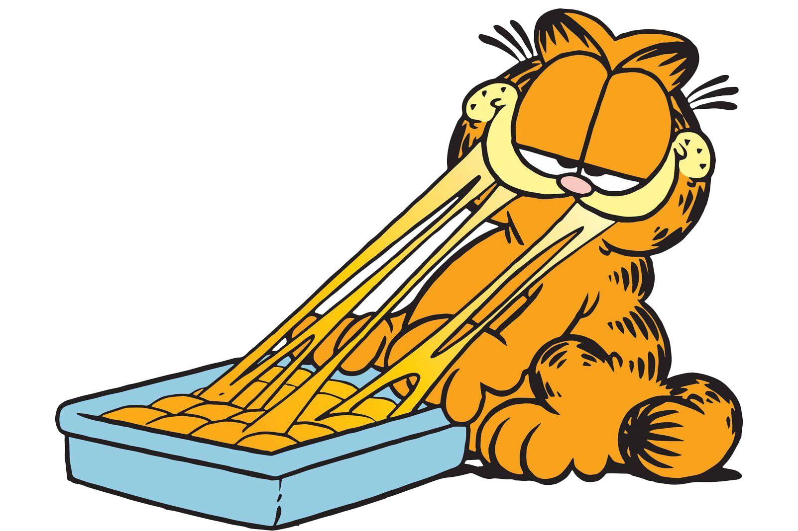

Garfield est un célèbre chat roux de bande dessinée, créé par l'auteur américain Jim Davis. Il apparaît pour la première fois le 19 juin 1978 et est devenu un personnage mondialement connu grâce aux bandes dessinées, aux dessins animés et aux films.

Garfield fait rire parce qu'il ressemble parfois aux humains : il aime dormir, manger, éviter le travail et seplaindre de tout ! Son humour repose sur ses remarques sarcastiques, son égoïsme amusant et ses petites aventures quotidiennes.
Garfield est apparu dans de nombreux dessins animés et films, notamment Garfield, le film (2004) et Garfield : Héros malgré lui (2024). En résumé : Garfield est un gros chat orange, gourmand et paresseux, qui adore les lasagnes et qui a toujours une remarque drôle à faire !